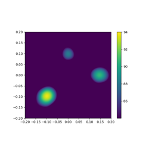
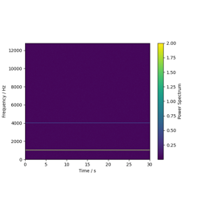

IO and signal processing examples¶
Examples suitable for users who are familiar with the basics of Acoular and want to learn more about signal processing and input/output capabilities.


Cross-spectral matrix import

Parallel processing chains – Multithreading with the SampleSplitter.
Parallel processing chains -- Multithreading with the SampleSplitter.

Parallel processing chains – SampleSplitter buffer handling.
Parallel processing chains -- SampleSplitter buffer handling.

Fast Fourier Transform (FFT) of multichannel time data.
Fast Fourier Transform (FFT) of multichannel time data.